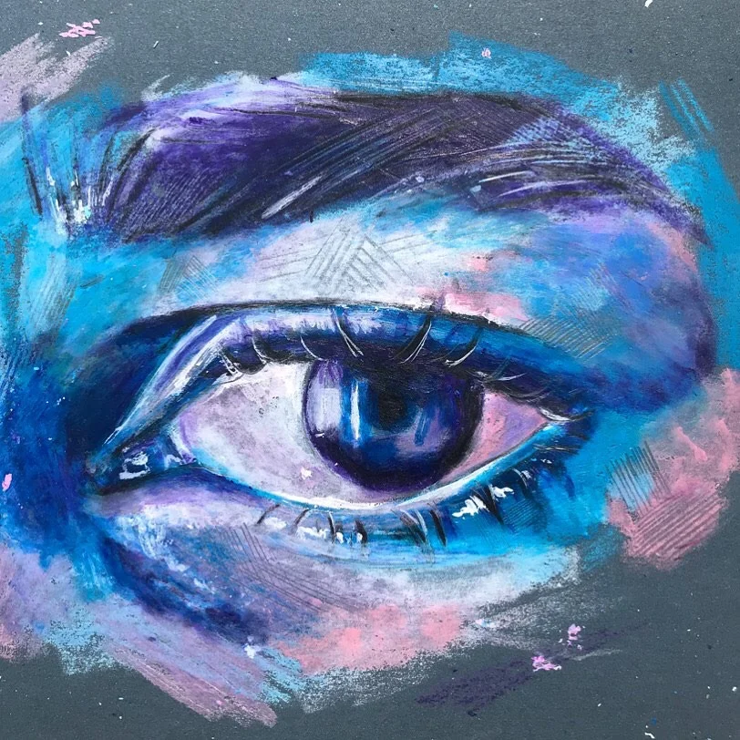
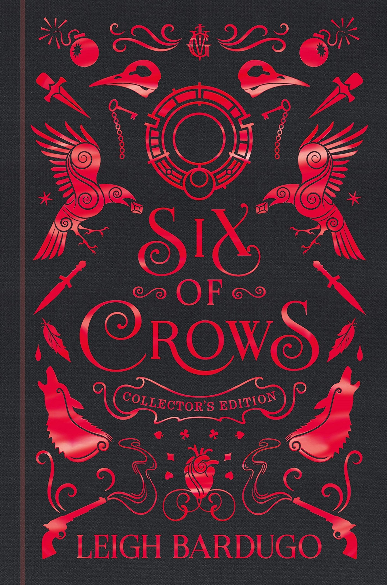
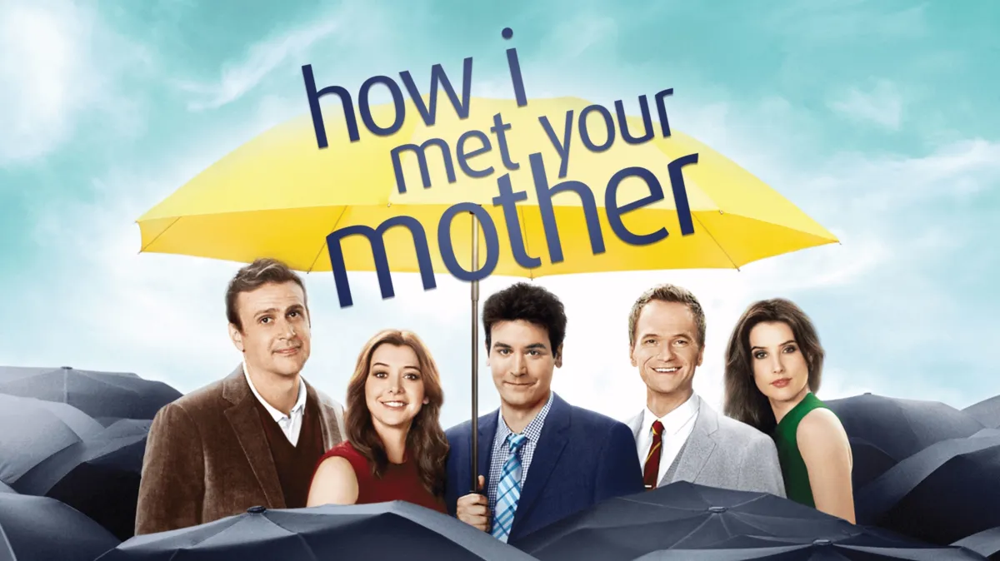

I love performing arts, which I feel like falls into the realm of art. So, I love to dance and sing, and my friends say I’m so dramatic to the point that I should take up theater, but I disagree. I don’t think I’m that dramatic. Also, I would assume that traditional art also falls into that field, and I would include that in something I like to do as I love to draw. I like digital art too, but I’m not as good at it so I wouldn’t say it’s a common hobby. Although, I often do photoshop.
At #5, we have I Hope This Doesn't Find You, a book that is perfect for people who eat up the genre of romance every time. #4, a classic fantasy, is Clockwork Angel, which is the perfect cozy travel story. My Top 3 fulfills me every time. At #3, I choose Once Upon a Broken Heart, which makes it obvious that I like fantasy - but this romantasy (meaning I usually do not like when the romance isn’t a subplot and rather the main thing) is another level of delicacy. At #2, there is Six of Crows, which is a book where no one I’ve ever met dislikes, as the heists pulled off in the book are top notch. #1, a controversial opinion in itself, is The Cruel Prince, which sits at the top since forever, but I love it nonetheless and it perfectly crafts my taste!
For my 5th favorite TV show, I would have to go with Dancing with the Stars, which is a show that I highly recommend because of its survival-like nature, which is a common concept I prefer in shows. Aligning with that idea, my #4 would most likely be Love Island, but more to make fun of than actually watch. At #3, I have this immense love for the disney show Liv and Maddie, which I constantly rewatch all the time. #2 is also a disney show, as it is my favorite childhood TV show, Lab Rats, and I think everyone should watch it at least once. At #1, surprisingly, we have the only non-survival or non-childhood TV show that I like, yet it’s my favorite. How I Met Your Mother sums up the feel-good emotions you experience when trying to find the perfect sitcom, and it does this perfectly itself.